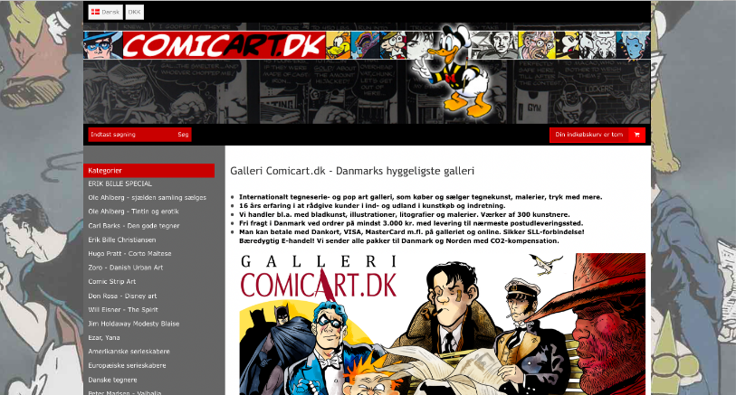

INDHOLD
Tema 5 - Grundlæggende indhold
I indholdstemaet lærte vi om video og videoproduktion samt fik til opgave at skulle redesigne en virksomheds hjemmeside med alt hvad det indebærer.
Før redesign
Gruppeprojektet - metoder og arbejdsprocesser
Gruppeprojektet - metoder og arbejdsprocesser For at danne et overblik over projektet arbejdede vi ud fra et Trello-board gennem udviklingen af redesignet. Derudover udarbejdede vi et procesdokument, hvor vi heri demonstrerede vores brug af metode og teori fra de tidligere temaer. Til dette projekt benyttede vi metoder, programmer og teorier vi tidligere er blevet introduceret til herunder Premiere Pro, illustrator, XD, moodboards, styletile, 5sekunders test, Bert-test, Ekspert-test, Lighthouse, layoutdiagrammer, Wireframes, prototype, USP, interview, sitemap, Github, mm. Vi fandt frem til, at websitet ikke var brugervenligt og svært at navigere i. Dette fandt vi frem til via Bert-testen, 5sekunders-testen, og var derfor vores primære opgave at optimere siden gennem design og kodning. Vores slut-tests viste at siden kom tæt på, Peters ønskede visuelle identitet.
Efter redesign

Pilotvideo
Til dette tema har vi bl.a. lært at producere video. Vi startede med at lære Adobe programmet PremierePro at kende ved at redigere udleveret materiale som øvelse. Derudover lærte vi metoder/teori. Vi arbejdede bl.a. med log-line (filmens handling i en sætning), transitions som crossfade, b-rolls, five shot sequence mm. Mit arbejde med pilotvideo kan ses i YouTube-videoen til højre.